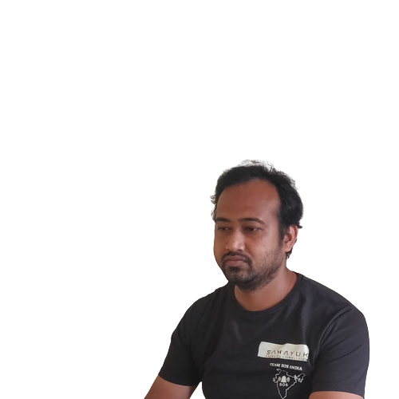

All the alphabets of my life
About Me
Hi, I am Nitesh Singh. Founding member of Team SOS India, FeedPPL Foundation, Project Sveta, Curator of Ravs.io.
Tech Projects Currently working on
- Team SOS India
- Team SOS Blood
- Ravs
- Project Sveta
Preparing for
- Job in Blockchain Starup
- Trading Competition